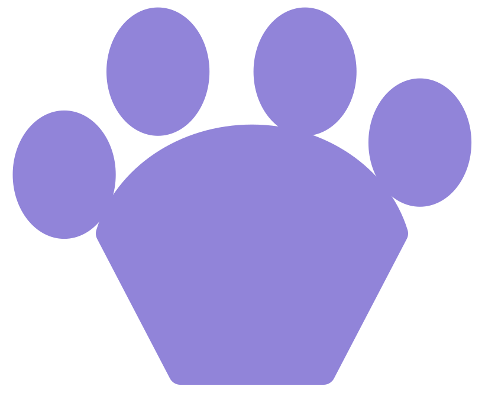

One click. One purr.
Purr is a checkup that runs the other tools for you and tells you what needs attention. You still decide what goes.

Cleanup
Gigabytes of junk out. Nothing lost.
Caches, logs, crash reports and developer leftovers, sorted by how safe they are to clear.
- {{ b }}

Prowl and Clutter
See what eats your disk.
A bubble map you can drill into, and a hunt for large, old and duplicate files.
- {{ b }}

Applications
Uninstall the whole app, not just the icon.
Apps scatter support files across your Library. LickMyPaw finds them and removes them together.
- {{ b }}

Protection
A second opinion on your Mac's defenses.
Scan downloads with an open source engine and check that macOS protections are actually switched on.
- {{ b }}

Performance and Maintenance
Quiet the startup crowd. Tune the rest.
Control what launches, see what uses memory, and run the housekeeping macOS hides in Terminal.
- {{ b }}

Privacy and Shredder
Cover your tracks. Bury the evidence.
Browser traces and recents go to the Trash. Files you really want gone get overwritten first.
- {{ b }}

And the small things that make it feel at home.
{{ x.title }}
{{ x.copy }}
Why LickMyPaw
The good Mac cleaners are paid, closed, and want deep access to your files.
{{ r.n }}
{{ r.title }}
{{ r.copy }}
Compare
Honest about what it does, and what it doesn't yet.
LickMyPaw covers the everyday jobs. It is a young project, so here is how it compares with CleanMyMac today.
| CleanMyMac | LickMyPaw | |
|---|---|---|
| {{ c.k }} | {{ c.them }} | {{ c.us }} |
CleanMyMac is a trademark of MacPaw. LickMyPaw is an independent project and is not affiliated with or endorsed by MacPaw. The malware scan relies on ClamAV signatures and is not a replacement for a full antivirus.
Command line
Scriptable. Agent-friendly.
The app binary doubles as a command line tool with JSON output. A ready-made skill lets AI coding agents like Claude Code use it safely: deletes are dry runs until you add --yes.